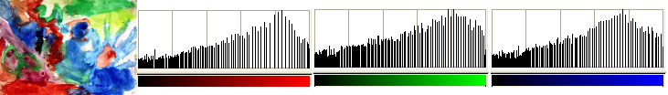

O comando ajusta automaticamente o brilho das cores da camada ativa para que o histograma do canal Valor seja o mais achatado possível, isto é, para que cada valor de brilho possível apareça aproximadamente no mesmo número de pixels que para os demais valores. Isso pode ser observado nos histogramas dos exemplos a seguir, nos quais as cores de pixel que ocorrem frequentemente na imagem são mais esticadas do que as cores de pixel pouco frequentes. Os resultados desse comando podem variar um pouco. Às vezes, o “Equalizar” funciona muito bem ao realçar o contraste de uma imagem,trazendo detalhes difíceis de se ver antes. Outras vezes, os resultados são muito ruins. É uma ferramenta muito potente e vale a pena ver se melhorará a sua imagem. Funciona em camadas de imagens RGB e em Tons de cinza. Se a imagem for Indexada, a entrada do menu fica desativada.
Figura 16.151. Imagem original

A camada ativa e seus histogramas Vermelho, Verde e Azul antes do “Equalizar”.
Figura 16.152. Imagem após o comando

A camada ativa e seus histogramas Vermelho, Verde e Azul após o tratamento.
Esticar o histograma cria lacunas entre as colunas de pixels dando a ele um visual listrado: cores frequentes são esticadas.